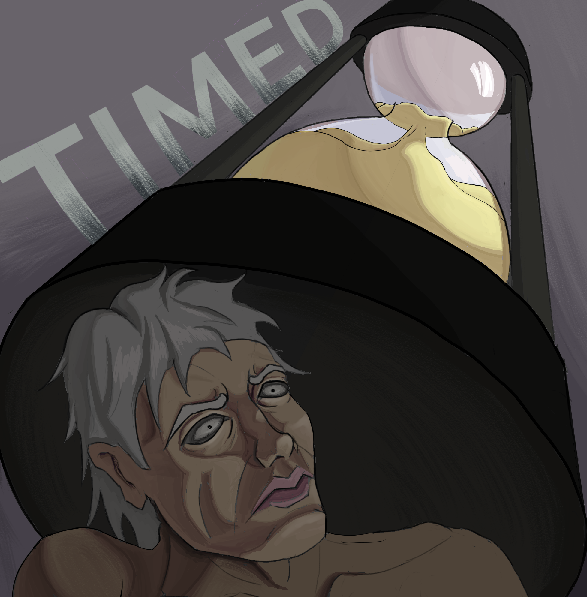

Suppression / possession / inner pressure
Dragged by Darkness
A visual for songs about being pulled by something internal, unwanted, and intimate.
Dark music cover art
I create symbolic cover art for dark, emotional, and experimental musicians who need more than a random image. You bring the song, theme, or feeling. I translate it into a visual.
Because even collapse needs branding.
For singles, EPs, dark releases, emotional concepts, and visual identities built around collapse, obsession, rage, desire, pressure, or transformation.
Selected work
These pieces show the direction: psychological tension, clear symbols, dramatic composition, and visuals designed to feel like they belong to a release.
Suppression / possession / inner pressure
A visual for songs about being pulled by something internal, unwanted, and intimate.

Conflict / control / rage
Violence framed as captivity. A cover direction for songs about domination, resentment, and emotional pressure.

Revenge / self-destruction / temptation
A visual metaphor for destroying your own path just to feel the warmth of revenge.

Mortality / pressure / decay
A cover idea for songs about running out, being measured, and watching the self expire.
The offer
This is for musicians who know what their song feels like, but do not have the image yet. I help reduce the theme into one strong visual idea: the symbol, the mood, the composition, and the emotional hook.
Darkwave, metal, industrial, post-punk, ambient, experimental, emo, noise, horror synth, and other emotionally heavy music.
The song, lyrics, title, emotional direction, references, or even a rough explanation of what the release means.
A square cover image built around the emotional core of the release, ready for digital platforms and promotion.
Process
Send the track, lyrics, title, theme, or emotional direction. It does not need to be perfectly explained.
I find the strongest symbol, mood, and composition so the cover has a clear emotional center.
You receive the final image for your release, plus simple crops if agreed for promotion.
Previous client proof
Different niche, same core skill: turning psychological ideas into visual images. Tiny plot twist, the skill was useful before the market positioning caught up.
“Saigret successfully captured the story’s tone by conveying the woman’s fear through her facial expression. By enlarging the walls and making them loom over her, the piece effectively captures the ominous presence of the Wall.”
“The cover perfectly captured the tone of the story... a beacon in darkness where the perceived solitude is about to be broken.”
“I was very impressed with the quality of Saigret’s artwork. It really brought my story to life in a new way. He did a great job capturing the psychological elements I was trying to convey.”
Work with me
Send the song, lyrics, title, or emotional direction. I will reply with the next step and, if the project fits, we can shape the cover around the core feeling of the release.
Currently taking selected single and EP cover projects.